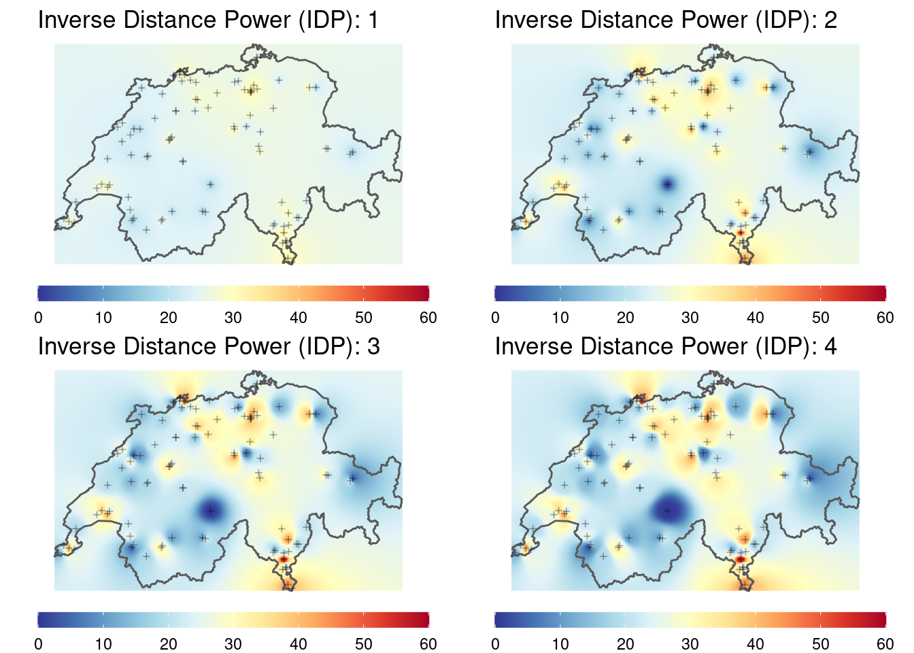
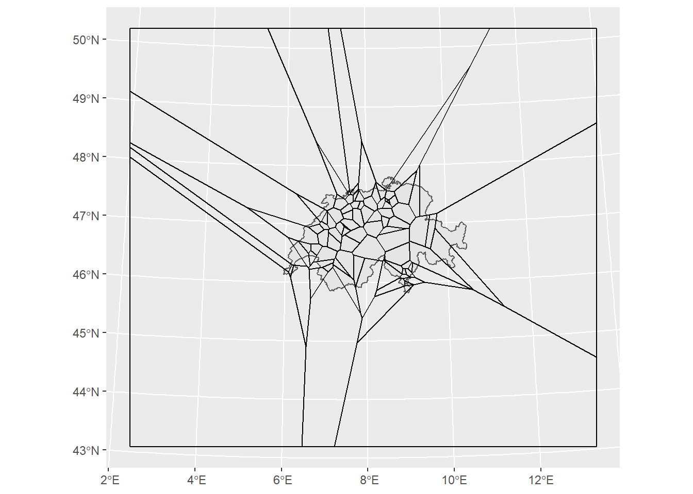
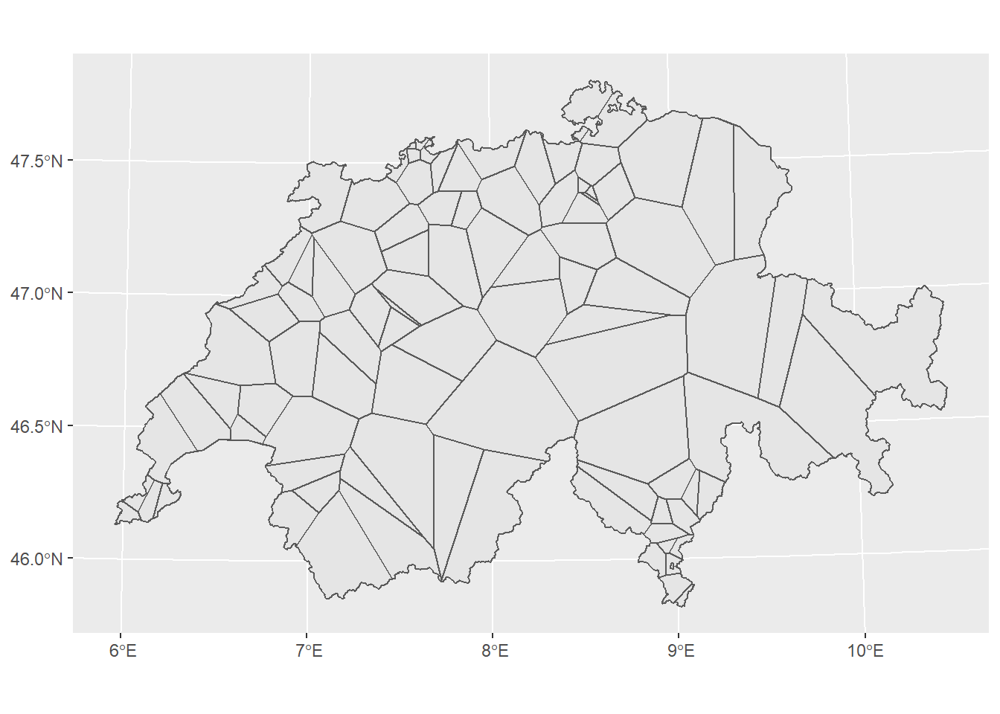
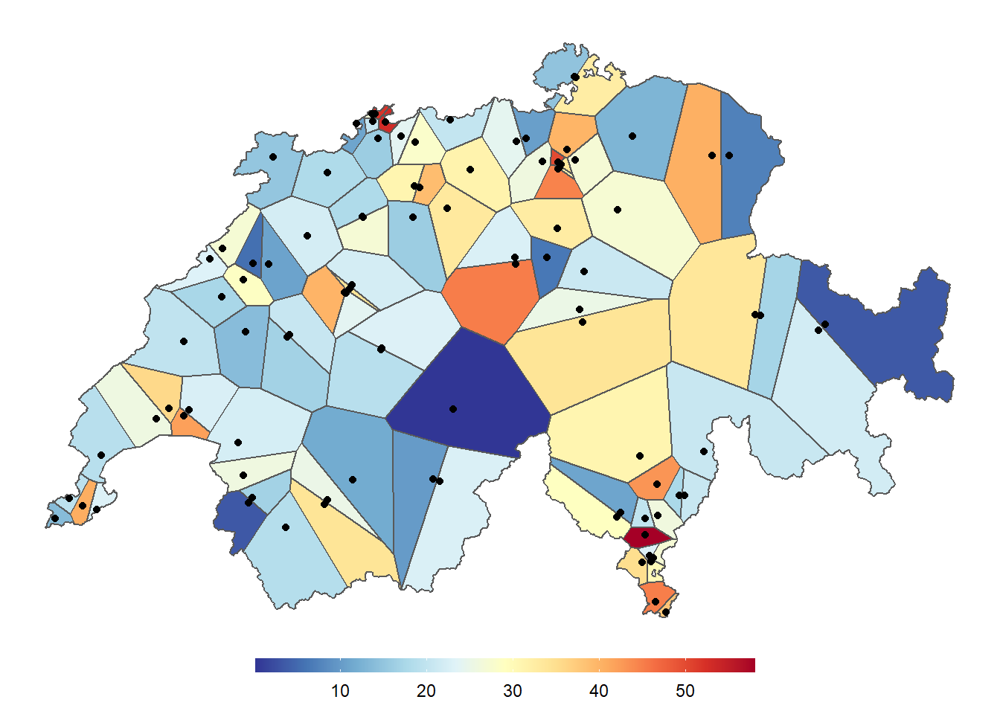

Rauman 2: Übung B
In dieser Übung geht es darum, zwei verschiedene Interpolationsverfahren in R umzusetzen. Im ersten Interpolationsverfahren verwenden wir die inverse distance weighted interpolation, später verwenden wir die nearest neighbour methode. Dazu braucht ihr die folgenden Packages:
library(sf)Linking to GEOS 3.8.0, GDAL 3.0.4, PROJ 6.3.1; sf_use_s2() is TRUElibrary(dplyr)
Attaching package: 'dplyr'The following objects are masked from 'package:stats':
filter, lagThe following objects are masked from 'package:base':
intersect, setdiff, setequal, unionlibrary(ggplot2)
library(gstat) # <- ggf. installieren!Weiter benötigt ihr die nachstehenden Datensätze:
Die Library gstat bietet verschiedene Möglichkeiten, Datenpunkte zu interpolieren, unter anderem auch die inverse distance weighted Methode. Leider ist das Package noch nicht so benutzerfreundlich wie sf: Das Package wird aber aktuell überarbeitet und in mittlerer Zukunft sollte es ebenso einfach zugänglich sein. Damit Ihr Euch nicht mit den Eigenheiten dieser Library umschlagen müsst, haben wir eine Function vorbereitet, die Euch die Verwendung der IDW-Interpolation erleichtern soll.
Wir nehmen Euch damit etwas Komplexität weg und liefern Euch ein pfannenfertiges Werkzeug. Das hat auch Nachteile und wir ermutigen alle, die dafür Kapazität haben, unsere Function eingehend zu studieren und allenfalls ganz auf die Function zu verzichten und stattdessen direkt gstat zu verwenden. Wenn ihr mit unserer Function arbeiten möchtet, müsst ihr den unten stehenden Code in euer Skript kopieren und ausführen.
my_idw <- function(groundtruth,column,cellsize, nmax = Inf, maxdist = Inf, idp = 2, extent = NULL){
library(gstat)
library(sf)
if(is.null(extent)){
extent <- groundtruth
}
samples <- st_make_grid(extent,cellsize,what = "centers")
my_formula <- formula(paste(column,"~1"))
idw_sf <- gstat::idw(formula = my_formula,groundtruth, newdata = samples, nmin = 1, nmax = nmax, maxdist = maxdist, idp = idp)
idw_matrix <- cbind(as.data.frame(st_coordinates(idw_sf)),pred = st_drop_geometry(idw_sf)[,1])
idw_matrix
}Nun könnt Ihr mit my_idw() den Datensatz luftqualitaet folgendermassen interpolieren.
my_idw(groundtruth = luftqualitaet,column = "value",cellsize = 10000, extent = schweiz)Folgende Parameter stehen Euch zur Verfügung:
- Notwendige Parameter:
groundtruth: Punktdatensatz mit den Messwerten (sf-Objekt)column: Name der Spalte mit den Messwerten (in Anführungs- und Schlusszeichen)cellsize: Zellgrösse des output Rasters
- Optionale Parameter
nmax: Maximale Anzahl Punkte, die für die Interpolation berücksichtigt werden sollen. Default:Inf(alle Werte im gegebenen Suchradius)maxdist: Suchradius, welcher für die Interpolation verwendet werden soll. DefaultInf(alle Werte bisnmax)idp: Inverse Distance Power: die Potenz, mit der der Nenner gesteigert werden soll. Default:2. Werte werden im Kehrwert des Quadrates gewichtet: \(\frac{1}{dist^{idp}}\).extent: Gebiet, für welches die Interpolation durchgeführt werden soll. Wenn nichts angegeben wird (DefaultNULL), wird die Ausdehnung vongroundtruthverwendet.
- Ouput
- der Output der Funktion ist eine
data.framemit 3 Spalten:X,YKoordinaten der interpolierten Wertepred: der Interpolierte Wert
- der Output der Funktion ist eine
Beim Output handelt sich hier um einen Raster-ähnlichen Datentyp (siehe Vorlesung Spatial DataScience 1). Diesen können wir mit geom_raster mit ggplot visualisieren. Dafür müsst ihr in aes die X und Y Koordinaten angeben, und der interpolierte Wert mit fill einfärben.
Aufgabe 1: Raeumliche Interpolation mit IDW
Rechnet so den IDW für die Luftqualitätsmessungen mit verschiedenen Parametern und visualisiert jeweils die Resultate. Experimentiert mit nmax sowie maxdist. Was stellt ihr fest?
Tips: - Was für Distanzen bei maxdist Sinn machen, könnt ihr dem Output aus der G-Funktion (vorherige Übung) entnehmen - Wählt am Anfang eine etwas Konvervative (grosse) cellsize und verringert diesen nur wenn euer Rechner damit gut klar kommt - Da der Output aus der Interpolation im gleichen Koordinatenbezugssystem sind wie schweiz.gpkg kann man diese beiden Datensätze im gleichen ggplot darstellen. Dafür müsst ihr die aesthetics (aes()) für jeden Layer einzeln setzen, und nicht auf der Ebene von ggplot().
[inverse distance weighted interpolation]
[inverse distance weighted interpolation]
[inverse distance weighted interpolation]
[inverse distance weighted interpolation]

Aufgabe 2: Interpolation mit Nearest Neighbour
Eine weitere einfache Möglichkeit zur Interpolation bietet die Erstellung eines Voronoi-Diagrammes, auch als Thiessen-Polygone oder Dirichlet-Zerlegung bekannt. sf liefert dazu die Funktion st_voronoi(), die einen Punktdatensatz annimmt und eben um die Punkte die Thiessenpolygone konstruiert. Dazu braucht es lediglich einen kleinen Vorverarbeitungsschritt: sf möchte für jedes Feature, also für jede Zeile in unserem Datensatz, ein Voronoidiagramm. Das macht bei uns wenig Sinn, weil jede Zeile nur aus einem Punkt besteht. Deshalb müssen wir vorher luftqualitaet mit st_union() von einem POINT in ein MULTIPOINT Objekt konvertieren, in welchem alle Punkte in einer Zeile zusammengefasst sind.
luftqualitaet_union <- st_union(luftqualitaet)
thiessenpolygone <- st_voronoi(luftqualitaet_union)
st_voronoi hat die Thiessenpolygone etwas weiter gezogen als wir sie wollen. Dies ist allerdings eine schöne Illustration der Randeffekte von Thiessenpolygonen, die zum Rand hin (wo es immer weniger Punkte hat) sehr gross werden können. Wir können die Polygone auf die Ausdehnung der Schweiz mit st_intersection() clippen. Auch hier braucht es zwei kleine Vorverarbeitungsschritte:
- wie vorher müssen wir die einzelnen Kantons-Polygone miteinander verschmelzen. Dies erreichen wir mit
st_union(). Wir speichern den Output alsschweiz, was als Resultat ein einzelnes Polygon der Schweizergrenze retourniert. - für die Thiessen-Polygone machen wir genau das Umgekehrte:
st_voronoi()liefert ein einzelnes Feature mit allen Polygonen, welches sich nicht gerne clippen lässt. Mitst_cast()wird dieGEOMETRYCOLLECTIONin Einzelpolygone aufgeteilt.
thiessenpolygone <- st_cast(thiessenpolygone)
thiessenpolygone_clip <- st_intersection(thiessenpolygone,schweiz)
Jetzt müssen wir nur noch den jeweiligen Wert für jedes Polygon ermitteln. Dies erreichen wir wieder durch st_join. Auch hier ist noch ein kleiner Vorverarbeitungsschritt nötig: Wir konvertieren das sfc Objekt (nur Geometrien) in ein sf Objekt (Geometrien mit Attributtabelle).
thiessenpolygone_clip <- st_as_sf(thiessenpolygone_clip)
thiessenpolygone_clip <- st_join(thiessenpolygone_clip,luftqualitaet)ggplot() +
geom_sf(data = schweiz) +
geom_sf(data = thiessenpolygone_clip, aes(fill = value)) +
geom_sf(data = luftqualitaet) +
scale_fill_gradientn(colours = rev(RColorBrewer::brewer.pal(11,"RdYlBu"))) +
theme_void() +
theme(legend.position = "bottom", legend.title = element_blank(),
legend.key.width = unit(0.10, 'npc'),
legend.key.height = unit(0.02, 'npc'))